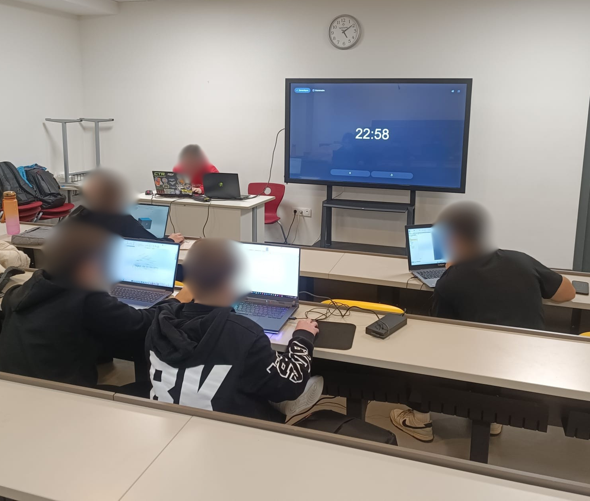
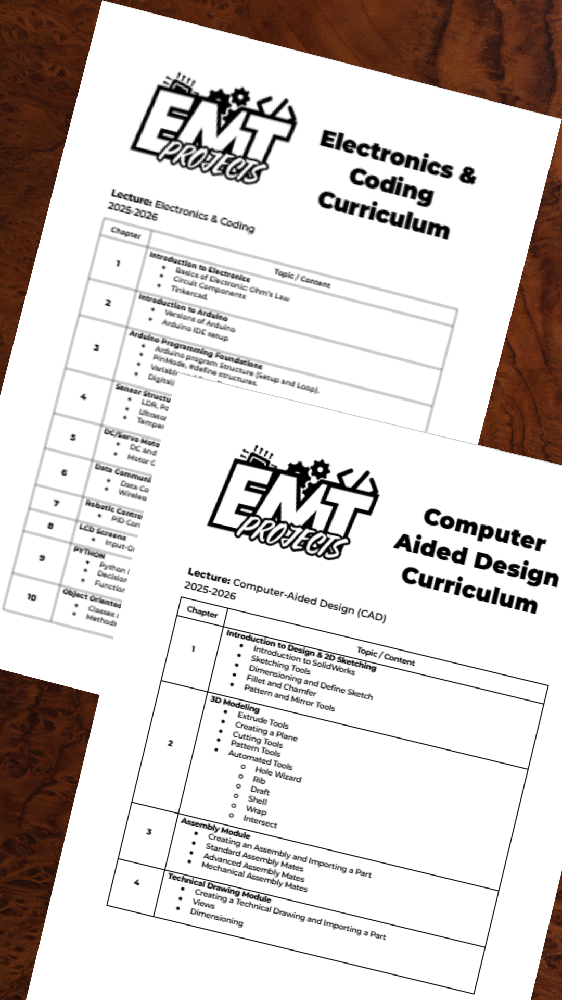

Student Engineering Community
Electronics · Mechanics · Technology
"Curious to Learn. Determined to Build."
Founded in 2024 to spread basic engineering knowledge, making technical skills accessible through peer-to-peer education in my school.
50+
Students Reached
30+
Hours of Training
24+
Lectures Delivered
2
Academic Years

During my early engineering journey, I realized a harsh truth: learning technical skills independently is incredibly difficult. Without a mentor or a peer group, getting stuck on a simple Arduino syntax error or a CAD constraint can stop progress for days, draining motivation.
My perspective shifted entirely when I became part of communities like CicekliAI. I experienced the power of collaborative learning and peer support. I realized that sharing knowledge does not just help others; it solidifies your own understanding.
I founded EMT Projects to build that exact environment for basic engineering.
My goal was to teach the knowledge I had gained, helping students build confidence alongside practical skills.
Rather than random workshops, we structured a comprehensive curriculum designed to take students from abstract concepts to physical creation. The syllabus was divided into two core pillars of modern engineering.
Running EMT Projects was fundamentally a management and leadership challenge. Teaching the curriculum was only the final step of a much deeper operational process.
Simplifying complex engineering concepts into digestible, chronological lesson plans required deep understanding of the subject matter.
Coordinating operations meant setting schedules, reserving spaces, maintaining continuous communication with community members, and ensuring everyone was aligned and informed.
Standing in front of a classroom forces you to adapt. I learned to read the room, adjust my pacing, and transition from a "lecturer" to a mentor who guides students through their own hands-on project development.

Operational Reality
True impact happens in the preparation hours before the lecture begins.
How leading EMT Projects shaped me as an engineer and an individual.
Moving from a passive learner to an active creator. I learned how to build something from nothing and rally others around a shared vision.
Mastering the ability to explain complex technical concepts simply. If you cannot explain a design to a beginner, you do not truly understand it.
Developing patience, empathy, and diagnostic skills to help peers overcome technical roadblocks without simply giving them the answer.
Executing a 2-year initiative required strict time management, resource allocation, and maintaining momentum across long academic semesters.